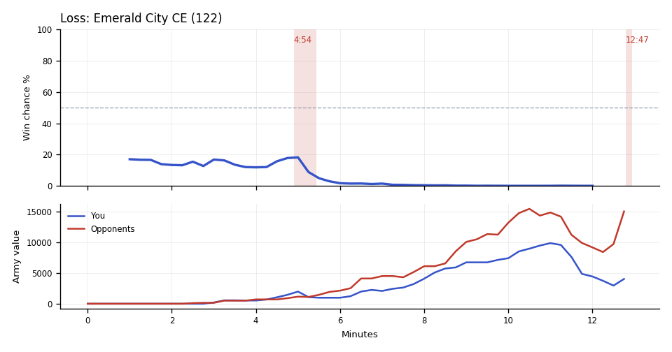

Result inferred from higher terminal team supply because no explicit replay result was available.
Loss
Loss. In the last big fight, at Scallop's fourth and third, you went in behind and lost 2.1x as much army as they did.
Why
11:08–12:03: Caelestis's Mutalisks killed 18 Liberators at Scallop's main, leaving Scallop's army almost gone.
11:31: You couldn't see it, but they had 45 more workers than you two and more income, so you went in behind.
11:32–12:33: brodo's Thors and Siege Tanks hit Scallop's undefended fourth and third, and Scallop lost 9 SCVs.
Try next game
Scallop: When free supply drops under 8 and your supply is past 100, build two Supply Depots at once. You sat at 116/116 from 10:50 to 11:18 with over 1,400 minerals banked. Check: free supply stays above 0 from 10:00 to 12:00.

Written by claude-sonnet-5-5 from the replay fact sheet.
Loss. The game turned at 4:54 when you lost a fight at their bases (1,525 lost, 350 killed). The biggest fight came at 11:08–12:33 (12,500 lost, 9,775 killed).
Team MMR 3667 vs 4344 against brodo (Terran), Caelestis (Zerg). Starting win chance 17%.
Try next game
Scallop: answer Thors with Marauders/Siege Tanks; TakeTheTip: answer Thors with Ravagers/Zerglings. Check: at least 4 of those within two minutes of their first Thor.
TakeTheTip: answer Siege Tanks with Brood Lords/Mutalisks/Ravagers. Check: at least 6 of those within two minutes of their first Siege Tank.
The losses came attacking into their bases; attack together and only when your combined army is clearly bigger. Most of your army died to Hellions. TakeTheTip: Zerglings lose to Hellions; Roaches and Queens hold them.
Turning points
4:54–5:26: you lost a fight at their bases (1,525 lost, 350 killed). Win chance 18% to 3%.
Fighting: you lost 1,525 of army at their bases and killed 350 of theirs. Going in, your armies were worth 1,650 against their 1,150.
Your losses: 28 Zerglings, 6 Hellions, 3 Banelings; killed mostly by Hellions (16 kills), Queens (8).
Their losses: 2 Hellions, 1 Reaper, 1 Marine.
What moved the win chance: army -10%
Try: The losses came attacking into their bases; attack together and only when your combined army is clearly bigger. Most of your army died to Hellions. TakeTheTip: Zerglings lose to Hellions; Roaches and Queens hold them.
12:47–12:56: you lost a fight at your bases (3,150 lost, 2,150 killed). Win chance 0% before it; the game ended right after.
Fighting: you lost 3,150 of army at your bases and killed 2,150 of theirs. Going in, your armies were worth 4,025 against their 15,000.
Your losses: 18 Roaches, 7 Hydralisks, 1 Liberator, 1 Zergling; killed mostly by Siege Tanks (11 kills), Thors (9).
Their losses: 2 Thors, 3 Cyclones, 4 Hellions.
Try: You were defending at your bases with 4,025 of army against 15,000; bring both armies home together earlier. Most of your army died to Siege Tanks. TakeTheTip: don't run into sieged Tanks; flank from several sides, or use Mutalisks/Brood Lords.
Across the whole game
Enemy Mutalisks (they made 68) destroyed 8,975 of your value (19 Liberators, 18 SCVs, 4 Missile Turrets). Counters built after they first struck at 6:30: Scallop made 15 Missile Turrets; TakeTheTip made 17 Hydralisks, 2 Spore Crawlers.
Enemy Thors (they made 8) destroyed 3,400 of your value (8 SCVs, 7 Roaches, 4 Hydralisks). Counters built after they first struck at 11:55: Scallop made 1 Siege Tank; TakeTheTip made none.
Enemy Siege Tanks (they made 13) destroyed 2,700 of your value (12 Roaches, 7 Hydralisks, 2 Zerglings). Counters built after they first struck at 10:28: Scallop made 7 Liberators; TakeTheTip made none.
Scallop had 3,035 unspent at 11:45.
Scallop lost 22 Liberators (6,050) over the game, mostly to Mutalisks (19), Thors (2).
Engine debrief-v3-0.5. Losses count only units killed by an enemy. Win chance comes from a model trained on your earlier games.
Older V2 evidence cards
Evidence-first cards are generated independently from the predictive model. Each card separates replay evidence, interpretation, past-only comparison, and an adjustment to test.
Abstained
No supported V2 insight
No supported window
Interpretation
No deterministic temporal pattern met the evidence and persistence checks for an actionable card.
Adjustment to test
No adjustment supported.
Confidence: AbstainedVisibility: replay_state
Evidence chain and comparison
Evidence
No qualifying factual evidence was retained.
Past-only comparison
No past-only comparison was used because no qualifying pattern was detected. Support: 0. Comparable replay IDs: None retained.
Provenance
No additional provenance was retained.
No qualifying deterministic V2 pattern was detected in the available replay evidence.
Economy and Army Position compare the duo to historical positions at similar game times; they are not model-contribution lanes.
Raw State Comparisons
Observed tracker values, not race-normalized scores. Duo and opponent totals are shown alongside TakeTheTip and Scallop so the normalized lanes above can be checked against the underlying army, economy and bank quantities.
Observed Combat Outcomes
Positive bars favor the duo; negative bars favor the opponents. Each bar summarizes the preceding 15 seconds at a sampled boundary; selected-window summaries exclude future events. These observations do not prove the correct alternative decision.
Factual Replay Timeline
These milestones are replay facts synchronized to the selected window. They are context, not claims about what caused the result.